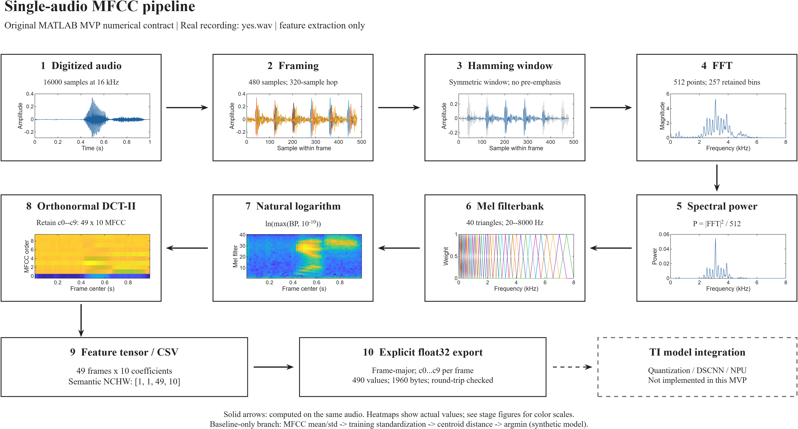
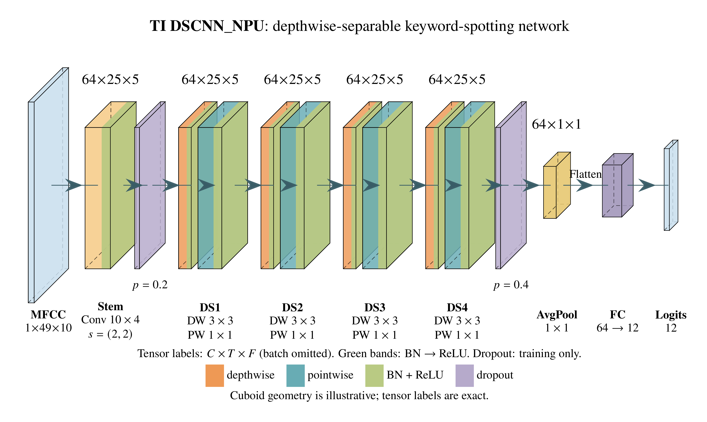
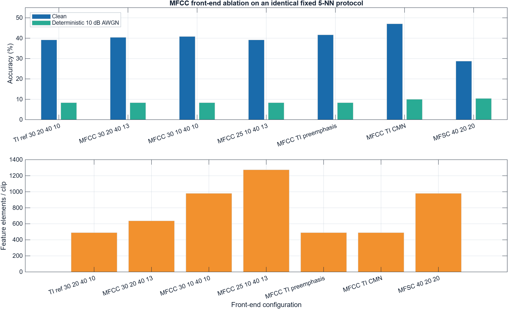

Project Feedback Two · 9 October 2026
The progress report now includes a runnable cached MFCC implementation, a 960-clip numerical-equivalence audit, repeated PC timing, and a corrected raw-duration contract. It connects the earlier recognition results with the next DSP/model experiments.
Primary work: the signal processing before deep learning
Follow one real speech recording through the modular MATLAB front end, inspect every stage, and relate the resulting representation to the TI DSCNN architecture. The research programme starts with exact DSP reproducibility and progresses to jointly optimized features, quantization and model structure.


Explore stage figures and research protocol
The MATLAB refactor preserves the original arithmetic exactly. These figures document DSP processing and sourced model architecture; trained DSCNN accuracy, TI SDK parity and hardware performance remain open research work.
Research question
Which raw-audio preprocessing pipeline and NPU-compatible DSCNN architecture give the best accuracy, noise robustness, unknown-word rejection, and resource cost for 12-class speech-command classification?
Method
Speech Commands v0.02 is partitioned using its official validation and testing lists. Each waveform is converted into 30 ms frames at a 20 ms step. Forty Mel-band energies are compressed into ten MFCCs, producing 49 time frames per utterance. A manual 5-nearest-neighbour model establishes the first auditable baseline; a depthwise-separable CNN is the planned next model.
The frame count follows directly from 1 + floor((16000 - 480) / 320) = 49. The resulting TI-shaped model input is [N, 1, 49, 10].
Evidence boundary: the current result uses 720 training and 240 held-out test samples. It is a small MATLAB baseline, not a DSCNN, quantised model, NPU compilation, or hardware energy result.
Joint research design
integrity + level
DC, pre-emphasis, noise
MFCC, MFSC, PCEN
scale + layout
TI NPU operators
The baseline begins with TI's 30 ms frame, 20 ms hop, 40 Mel-bin, 10-coefficient MFCC contract. Preprocessing candidates then change one bounded factor at a time: waveform conditioning, normalization, noise-aware training, MFSC or PCEN, and integer scaling. Each surviving front end is paired with a controlled DSCNN width/depth matrix using depthwise and pointwise convolution, global average pooling, and a 12-class output.
Accuracy is not the only objective. Front-end latency and memory are reported separately from model parameters, MACs, activation RAM, quantized accuracy, compiler NPU coverage, and later hardware energy.
Reproducible 12-class audio package
The repository contains twelve class-level ZIP archives: ten target commands, _unknown_, and _silence_. Each archive has 60 training and 20 held-out test WAV files at 16 kHz mono, for 960 examples in total. The manifest records provenance, split, sample format, and SHA-256.
Open dataset downloadsRead the full experiment plan
Scope: this is a compact, auditable course-project subset. The complete 105,829-file Speech Commands v0.02 corpus remains outside normal Git history and is used locally for later full-scale training.
Earlier classical diagnostics



The reference baseline reached 39.17% accuracy and macro recall, above the 8.33% chance level, with zero audited speaker overlap. CMN improved clean accuracy to 47.08% without increasing the 490-element input, but every clean-trained configuration collapsed toward chance at 10 dB. Noise-aware training and open-set rejection are therefore higher priorities than increasing the feature map.
Evaluation and deliverables
Exact manifests and speaker-overlap audit.
Accuracy, macro recall, per-class precision/recall.
Runtime, parameters, memory, and later MCU feasibility.
Timeline
| Weeks | Milestone |
|---|---|
| 1-2 | Scope, dataset audit, literature review |
| 3-5 | Waveform conditioning and MFCC/MFSC/PCEN ablations |
| 6-9 | NPU-compatible DSCNN width/depth and INT8 studies |
| 10-11 | Noise robustness, rejection, compiler, memory, and latency analysis |
| 12-13 | Final report, GitHub documentation, demonstration |
References
- Warden, Speech Commands, 2018.
- Zhang et al., Hello Edge, 2017.
- Davis and Mermelstein, IEEE TASSP, 1980.
- Sainath and Parada, Interspeech, 2015.
- Tucker et al., Interspeech, 2016.
- Texas Instruments Tiny ML Tensorlab example.
- Wang et al., PCEN trainable frontend, IEEE ICASSP 2017.
- Sorensen et al., embedded DS-CNN and MFSC, 2020.
- Garai et al., TinyML KWS review, ScienceDirect 2026.
- Medur et al., TinyML KWS optimization, IEEE 2025.
- Rao and Koolagudi, MFCC Features, 2013.
- Giannakopoulos and Pikrakis, Audio Features, 2014.